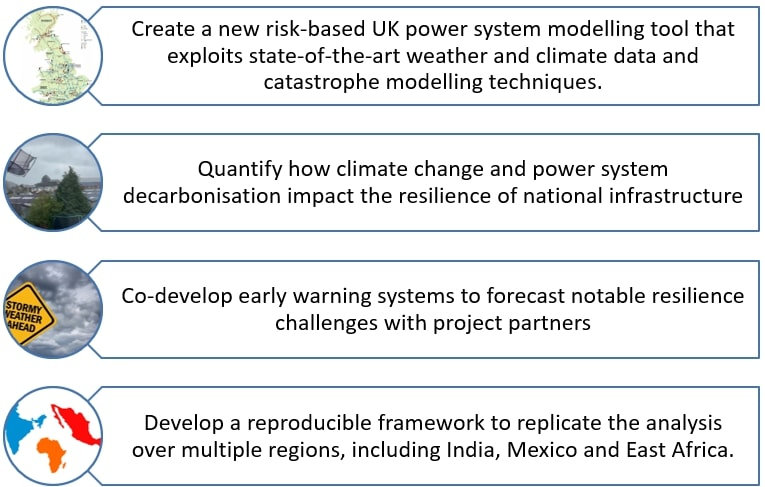
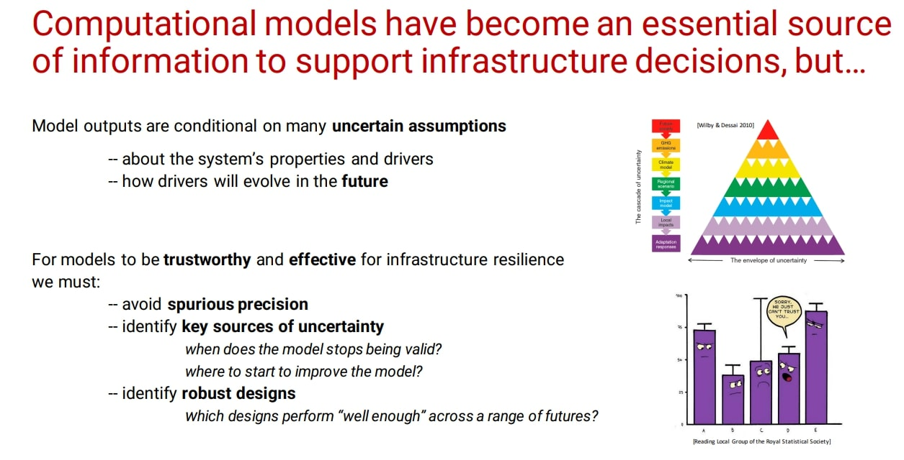

Newcastle Academic Track Fellowship Plans
Power systems are having to decarbonise at an unprecedented rate to meet carbon reduction targets. Achieving this requires huge increases in installed renewable generation, yet this dramatically increases power systems’ susceptibility to impacts of climate change because of the increasing frequency and severity of extreme weather events. The recent Lords inquiry on Critical national infrastructure and climate change shows the urgent need for evidence to support the UK National Resilience Strategy, while still meeting net-zero targets. However, the inability of current power system models to adequately capture the impacts of climate change, means that the fundamental knowledge and resources to address this critical issue are lacking. This puts at risk £Billions of infrastructure investment.
My research addresses this challenge by developing new modelling frameworks that integrate high-resolution meteorological data and risk modelling techniques into national-scale power system models. This research is only possible due to my unique multi-disciplinary skill set in climate, energy and risk modelling, and extensive network of energy stakeholders (including system operators, energy companies, and wind energy developers). This work will yield a step-change in our ability to use climate data to inform net-zero adaptation strategies. The research programme will:
See the links below for some related projects, and papers. I am always keen to talk to people doing work in this area so please do get in touch if anything below is of interest!
Bringing Uncertainty Quantification and Sensitivity Analysis in Modelling for Resilience
With Fransecsca Pianosi (PI) Gemma Coxon (Co-I) Hannah Bloomfield (Co-I) Saskia Salwey (Named Researcher)
This project will set the foundations for including uncertainty quantification and sensitivity analysis (UQ&SA) functionalities within the DAFNI platform. To achieve this goal, we will:
- Develop two pilot applications (in the form of DAFNI Workflows) to demonstrate how UQ&SA can be performed within DAFNI and the benefits of doing so.
- Engage with the DAFNI users community, and particularly early-career researchers, to provide training and discussion opportunities on how and why doing UQ&SA.
- Develop a set of recommendation for the DAFNI team on how to further expand the platform to make UQ&SA more accessible and relevant for users.
Modelling demand and renewable generation over India
With Kieran Hunt (University of Reading) and Emma Friend (University of Readinf) Isa Djikstra (University of Reading)
Two MSc projects have been completed allowing us to:
- Create open datasets and models for demand wind and solar power using the ERA5 reanalysis.
- Explore the spatial and temporal complementarity of wind and solar power over India.
- Identify the meteorological drivers of extreme energy events (i.e., renewable energy droughts) over India
- Understand the state of large-scale modes of climate variability (e.g. the MJO and BSISO) during renewable energy droughts.
Papers related to this work are currently in review (see publications section). In the future we would like to extend these existing tools to:
Please get in touch if you're interested in pursuing this topic as a PhD project.
Reasonable worst case stress-test scenarios for the UK energy sector in the context of the changing climate
A project in collaboration with the UK Climate Change Committee.
The UK has committed to reaching net-zero emissions by 2050 and decarbonising the electricity system by 2035. This will require a rapid transition of the electricity system to one with lower reliance on fossil fuels and greater weather-dependent renewable generation (such as wind and solar power). This increased weather dependence adds a new set of challenges for balancing supply and demand due to the inherent variability of weather, increasing the need for investment in storage and flexible technologies.
The impacts of climate variability and climate change on the UK energy system is a topic of current academic interest. Both in terms of security of supply risks from system level challenges (e.g., energy shortfall events, where existing generation is insufficient to meet demand) or from infrastructure challenges (e.g., extreme weather impacting the operability of energy system components).
Newcastle University and other academic institutions are undertaking a large programme of work relating to energy sector impacts using the UK Climate projections data (UKCP18). This is a suite of state-of-the-art climate model projections available at 12km spatial resolution over Europe, and 2.2km resolution over the UK. Simulations are available from 1980-2080 often at hourly resolution. Climate data of this high spatial and temporal resolution is critical for the accurate quantification of hazards of relevance to the energy sector.
This project extends the existing work on single hazards, to highlight risks from potential compounding events (e.g., short periods of high demand combined with low wind power generation, or particular weather patterns extending over a very large area of Europe) or sequences of weather (such as several storms happening in quick succession or hot, dry weather followed by a burst of very heavy rain). At longer timescales these types of compound events could be years with low renewable energy production relative to demand, or as successive years with low production.
The work will consider how climate change is altering key weather hazards. Reasonable worst case weather events for the UK energy system, under current and future climate conditions will be presented. From these scenarios demand, wind power, and solar photovoltaic generation timeseries are developed which could be used as inputs to power system models to assess their wider grid impacts.
Although this project is designed with a UK focus it could be directly applicable to other countries wanting to design stress tests for rapidly decarbonising energy systems.